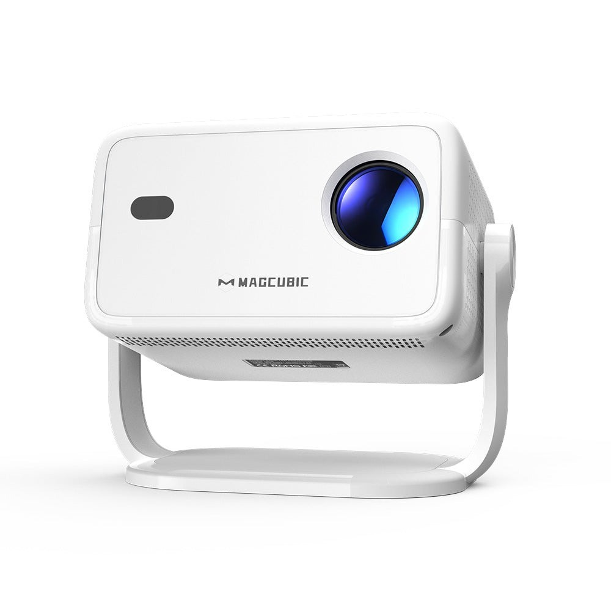
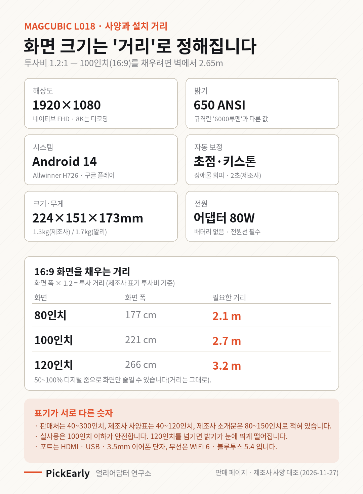
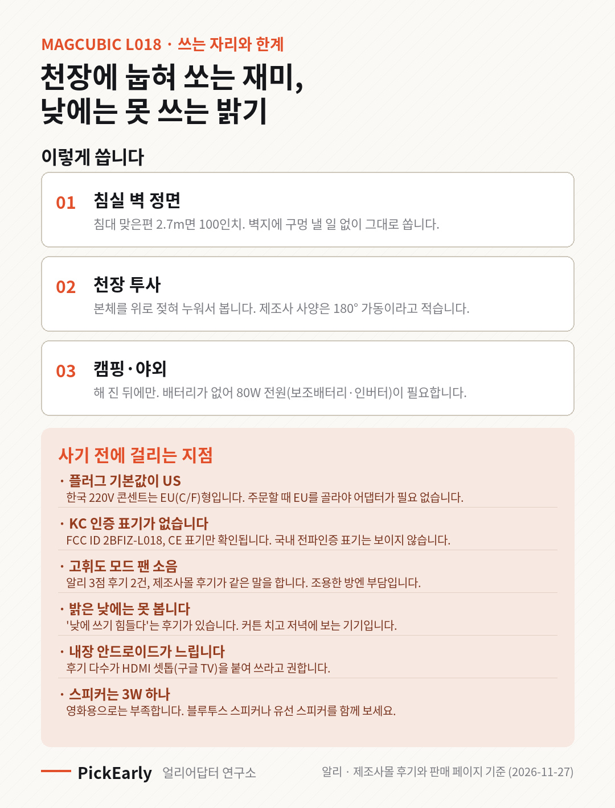

8만 8천 원대 650ANSI 미니 프로젝터 Magcubic L018 — '360°'인지 '180°'인지부터 확인했습니다
Magcubic L018은 650ANSI·네이티브 1080P·안드로이드 14를 8만 8천 원대에 내건 미니 프로젝터입니다. 상품명은 '360° 회전'인데 제조사 사양표와 공식 영상은 '180°'라고 적혀 있습니다. 판매 페이지·제조사 사양·동봉 설명서·실구매 후기를 맞춰 플러그 선택(EU), 설치 거리(1.2:1), KC 인증 표기 부재, 고휘도 팬 소음까지 정리했습니다.
목차 · 12개 장
이 포스팅은 알리익스프레스 어필리에이트 활동의 일환으로, 일정액의 수수료를 제공받을 수 있습니다.
가격·평점·재고·규격은 2026년 11월 27일 밤 알리익스프레스 상품 페이지에서 직접 확인한 값입니다. 같은 시각 제조사 공식몰(magcubic.com)과 동봉 설명서(PDF)도 함께 대조했고, 값이 서로 다르면 그 자리에서 밝혔습니다. 블랙프라이데이라 가격이 자주 흔들리니 결제 화면의 최종 금액으로 확인하십시오.
프로젝터를 처음 사는 사람이 가장 먼저 하는 실수는 밝기 숫자를 믿는 것입니다. 650ANSI면 어두운 방에서 100인치를 채우는 정도의 밝기입니다. 두 번째 실수는 어디에 두고 어느 방향으로 쏠 것인가를 나중에 생각하는 것입니다. 이 제품의 상품명에 붙은 '360°'가 바로 그 지점을 흐립니다.
Magcubic L018은 흰색 본체가 U자형 거치대에 걸린 미니 프로젝터입니다. 네이티브 1080P, 650ANSI, 안드로이드 14, 자동초점·자동키스톤에 8만 8천 원대. 숫자만 보면 이 가격대에서 나올 수 없는 조합입니다. 그래서 이 글은 세 가지를 확인했습니다. 첫째, 360°인가 180°인가. 둘째, 한국에서 쓰려면 플러그를 무엇으로 골라야 하는가. 셋째, 이 가격에서 어디까지 양보해야 하는가.

1. 8만 8천 원, 이 가격에 무엇이 들어 있나
1-1. 지금 가격과 파는 곳
알리익스프레스 판매처는 Magcubic Flagship Store(제조사 공식 스토어)입니다.
| 항목 | 내용 |
|---|---|
| 표시가 | |
| 붙어 있는 쿠폰 | ₩80,000 이상 ₩11,000 할인 |
| 평점 | 4.9 (이 판매자 후기 521건, 전체 집계 7,040건) |
| 판매량 | 이 판매자 2,000+ · 전체 집계 10,000+ |
| 색상 | 화이트 한 가지 |
| 플러그 | EU · US · AU · UK (기본 선택이 US) |
| 배송 | 무료 · CJLogistics / Korea ePOST · 12월 4~8일 도착 예정 |
| 구매 제한 | 이 가격에 1인 3개까지 |
| 판매자 보증 | 무료 반품 · 분실/파손 환불 · 30일 미도착 환불 · 지연 시 ₩1,300 쿠폰 |
여기서 먼저 짚을 것이 쿠폰과 기본 플러그입니다. 상품 가격(₩88,768)이 쿠폰 기준(₩80,000)을 넘으므로 쿠폰을 받아 적용하면 ₩77,768이 됩니다. 다만 이 상품은 'Choice' 특가로 표시되어 있어 쿠폰 중복 적용 여부가 결제 화면에서 갈립니다. 미리 계산해 두고 결제 직전 금액을 확인하십시오.
그리고 플러그 기본값이 US입니다. 이건 4장에서 따로 다룹니다. 지금은 "그대로 주문하면 한국 콘센트에 안 맞는 플러그가 온다"만 기억하시면 됩니다.
1-2. 규격란 숫자를 그대로 옮기면
판매 페이지 아래 'Specifications'를 펼친 값과, 제조사 공식몰의 사양표를 나란히 두었습니다.
| 항목 | 알리 판매 페이지 | 제조사 공식몰 |
|---|---|---|
| 해상도 | 1920×1080 (8K 디코딩 지원) | 1080P · 1920×1080 |
| 밝기 | 650 ANSI (별도 항목 'Brightness: 6000 Lumens') | 650 ANSI |
| 시스템 | Android (본문: Android 14) | Android 14 · Allwinner H726 |
| 투사 방식 | LCD · 4:3 / 16:9 | LCD · 16:9 |
| 화면 크기 | 40~300인치 | 40~120인치 (소개문에는 80~150인치) |
| 투사비 | 1.2:1 (상세 이미지) | 1.2:1 |
| 명암비 | 10,001:1 ~ 20,000:1 | 2,000:1 |
| 무게 | 1.7 | 1.3kg |
| 크기 | — | 224×151×173mm |
| 스피커 | 내장 (있음) | 1×3W |
| 전원 | DC/AC · 어댑터 동봉 · 80W · 배터리 없음 | DC · 어댑터 동봉 |
| 포트 | — | HDMI · USB · 3.5mm (설명서) |
| 무선 | WiFi 6 · 블루투스 5.4 | WiFi 6(2.4/5GHz) · BT 5.4 |
| 광원 수명 | 30,000시간 | LED |
| 인증 표기 | FCC ID 2BFIZ-L018 | CE |
| 원산지 | 중국 | 중국 |
표에서 눈에 띄는 세 가지를 먼저 말씀드립니다.
- 명암비: 판매 페이지는 20,000:1, 제조사 사양표는 2,000:1입니다. 같은 제품의 같은 항목이 열 배 차이입니다. 이런 경우 낮은 쪽(2,000:1)이 실제에 가깝습니다. LCD 프로젝터에서 2,000:1도 좋은 값입니다.
- 무게: 제조사는 1.3kg, 알리 규격란은 1.7입니다. 알리 쪽은 포장 무게일 가능성이 큽니다. 어깨에 메고 다닐 생각이라면 1.3kg 기준으로 보십시오.
- '6000 Lumens': 규격란의 '밝기' 칸에 따로 적힌 값입니다. ANSI 루멘과 단위가 다른, 이른바 마케팅 루멘입니다. 실제 밝기는 650ANSI로 보셔야 합니다.
1-3. 후기 7,040건의 정체
페이지 위쪽에 이렇게 병기되어 있습니다.
This supplier: 521 reviews, 2,000+ sales | Total: 7040 reviews, 10,000+ sales
7,040건은 이 상품의 후기가 아니라, 알리가 '유사 상품'까지 합쳐 집계한 숫자입니다. 후기 목록을 내려 보면 상당수에 'Review for similar item'이라고 붙어 있습니다. 실제 이 판매자의 L018 후기는 521건입니다. 별점 분포는 5점 6,295 · 4점 601 · 3점 144 · 2점 0 · 1점 0인데, 1·2점이 한 건도 없는 분포라 별점만으로 만족도를 단정하기는 어렵습니다. 그래서 이 글은 3점 후기의 문장을 따로 읽었습니다(6장).
제조사 공식몰 쪽 후기는 별도로 4.9/5, 359건(5점 90% · 4점 10% · 2점 1%)이고, 여기에는 사진 후기가 298건 붙어 있습니다.
2. '360°'인가 '180°'인가 — 여기서 갈립니다
같은 제품인데 표기가 다릅니다.
- 알리 상품명·상세 이미지: "360° Projector", "360° rotatable design", "360° Removable Adjustable Stand Projector — Easily rotate and tilt"
- 제조사 공식몰 사양표·소개문: "180° Flexible Projection & Portable Design — adjustable 180° design"
- 제조사 공식 유튜브 영상 제목: "Magcubic Native 1080P 650ANSI 4K Android 14 L018 180° Projector"
제조사 자신이 사양표와 영상에서는 180°라고 적고, 판매 페이지에서만 360°라고 씁니다. 숫자는 180°가 맞습니다.
그런데 실용적으로는 숫자보다 방향이 중요합니다. 두 표기가 공통으로 말하는 것은 같습니다 — 벽에 정면으로 쏘거나, 본체를 위로 젖혀 천장에 쏠 수 있다는 것입니다. 사진을 보면 본체가 U자형 스탠드의 한 축에 걸려 있어, 그 축을 중심으로 위아래로 젖혀지는 구조입니다. 좌우로 돌려 옆 벽에 쏘고 싶다면 본체(또는 받침)를 통째로 돌려 놓으면 됩니다. 상세 이미지에 적힌 '분리 가능한 스탠드(Removable)'라는 표현대로 스탠드에서 본체를 떼어 다른 받침에 얹는 것도 가능하다고 안내되어 있습니다.
정리하면 이렇습니다. '한 자리에서 360° 자유자재로 도는 짐벌'을 기대하시면 실망합니다. '벽 정면과 천장, 두 방향을 한 축으로 오가는 받침'을 기대하시면 맞습니다. 침대에 누워 천장으로 보는 용도에는 180°로 충분합니다.
3. 설치 거리 — 1.2:1이 뜻하는 것
투사비 1.2:1은 '화면 폭의 1.2배 거리에서 그 폭만큼의 화면이 나온다'는 뜻입니다. 16:9 화면의 폭은 대각선의 약 87%이므로, 거리는 이렇게 계산됩니다.
- 80인치: 폭 177cm × 1.2 ≒ 2.1m
- 100인치: 폭 221cm × 1.2 ≒ 2.7m
- 120인치: 폭 266cm × 1.2 ≒ 3.2m

2.7m면 흔한 원룸·아파트 침실의 벽과 침대 사이 거리와 비슷합니다. 벽걸이 TV 자리에 그대로 놓을 수 있는 크기라는 뜻이고, 이 제품의 가장 현실적인 쓰임입니다.
주의할 것이 하나 있습니다. 화면 크기 표기가 세 가지로 갈립니다. 알리 규격란은 40~300인치, 제조사 사양표는 40~120인치, 제조사 소개문은 80~150인치라고 적습니다. 300인치는 이 밝기로 채울 수 있는 크기가 아닙니다. 650ANSI로 120인치를 넘기면 화면이 흐릿해지므로, 100인치 이하로 계획하시는 편이 안전합니다. 산술적으로는 40인치(약 1.1m)부터 가능하지만, 그 정도면 차라리 TV가 낫습니다.
화면 크기를 줄이는 디지털 줌(50~100%) 기능은 있습니다. 다만 줌을 쓰면 자동초점과 키스톤을 다시 잡아야 한다고 판매 페이지가 직접 적어 두었습니다.
4. 전원과 플러그 — 기본값이 US인 것이 함정입니다
4-1. 한국 콘센트에는 EU를 골라야 합니다
이 상품의 플러그는 EU · US · AU · UK 네 가지인데, 알리 장바구니의 기본 선택이 US Plug입니다. 그대로 주문하면 납작한 두 발짜리 플러그가 옵니다.
한국 가정용 콘센트는 220V C/F형(둥근 두 발)입니다. EU 플러그가 그대로 들어가고, US 플러그는 '돼지코' 어댑터가 필요합니다. 주문 화면에서 EU를 고르면 그만인 일이니, 결제 전에 한 번만 확인하십시오. (제조사 공식몰은 반대로 EU가 기본값입니다. 알리 쪽 기본값이 US인 것은 미국 시장 기준 설정이 그대로 남은 것입니다.)
4-2. 전압 표기는 어디에도 없습니다
판매 페이지 규격란에는 'Voltage range' 항목이 있지만 값이 "Low voltage non-USB (below 75V DC, below 50V AC)" — 이는 전압 규격이 아니라 안전 규정 분류입니다. 제조사 사양표에도 입력 전압(100~240V) 표기가 없습니다. 그러니 "220V에서 쓸 수 있다"를 스펙으로 확인했다고 말할 수는 없습니다.
현실적인 순서는 이렇습니다. 한국 배송지로 주문하는 상품이고 EU 플러그를 고를 수 있으니 대개 문제가 없지만, 도착하면 어댑터 라벨의 입력 전압(100–240V)을 먼저 확인하고 콘센트에 꽂으십시오. 라벨이 220V를 받지 못하는 값이면 판매자에게 문의해 교환받아야 합니다.
4-3. 배터리가 없습니다 — 80W
규격란에 Battery: no, 소비전력 80W로 적혀 있습니다. 전원선 없이는 1초도 켜지지 않습니다. '휴대용'이라는 표현에 캠핑을 그리셨다면, 보조배터리(PD 100W급)나 인버터를 함께 준비해야 합니다. 80W는 소형 노트북 정도의 소비전력이라, 20,000mAh 보조배터리로는 1시간 남짓입니다.
구성품은 본체 · 리모컨(건전지 별매) · 전원 케이블 · 사용 설명서입니다. 규격란에는 '어댑터 동봉'으로 적혀 있는데 설명서 구성품 목록에는 '전원 케이블'만 있어, 어댑터가 케이블에 일체형인지 분리형인지는 도착 전에는 확정할 수 없습니다. HDMI 케이블은 들어 있지 않습니다.
5. 자동초점·자동키스톤 — 이 가격대의 진짜 무기
이 제품의 값어치는 밝기보다 자동 보정에 있습니다. 제조사는 "자동초점·자동키스톤·장애물 회피로 2초 만에 정렬된 화면"이라고 적습니다. 설명서의 설정 구조를 보면 실제 항목이 확인됩니다.
Settings → Projection settings → Installation Mode, Device Mode, Digital Scaling, Auto Focus, Auto Four Corner Correction, Screen Recognition, Intelligent Obstacle Avoidance, Manual trapezoidal
즉 자동 사각 보정(4점) · 화면 자동 인식 · 장애물 회피 · 수동 트라페조이드 보정이 모두 들어 있습니다. 벽에 액자를 걸어 두었거나 스위치가 튀어나와 있어도 화면이 그 자리를 피해 잡히는 기능입니다. 8만 원대 프로젝터에서 이 조합은 흔하지 않습니다.
후기도 이 부분을 먼저 칭찬합니다.
"화면 밝기가 아주 높아서 보기 쉽고 안드로이드 앱도 잘 돌아갑니다. 자동초점이 잘 되어 수동으로 맞출 필요가 없습니다. 전원을 켜면 초점과 화면 크기를 스스로 맞춥니다." — 알리 후기, 2026-04-20
"이 가격에 자동 키스톤과 자동초점이 들어 있다는 게 믿기지 않습니다. 낮에 쓰기는 힘들지만요." — 알리 후기, 2026-03-15
두 번째 후기가 이 제품의 성격을 정확히 말합니다. 자동 보정은 합격, 밝기는 어두운 방 전용.
리모컨도 값어치가 있습니다. 6축 자이로 에어마우스 기능과 음성 검색, 전자식 포커스 버튼이 달려 있습니다. 프로젝터를 벽에 두고 화면을 가리키듯 커서를 움직일 수 있어, 침대에 누워 안드로이드 앱을 조작할 때 편합니다. 건전지는 별매입니다.
6. 후기가 갈리는 지점

6-1. 좋은 점 (후기에서 반복되는 것)
- 가격 대비 화면: "작은 크기에서 나오는 화면이 크다. 거실은 물론 캠핑에서도 몰입감이 있다"(2025-12-02), "벽에 바로 쏴도 밝기가 충분하다"(제조사몰 후기) 같은 평가가 반복됩니다.
- 자동 보정: 5장에서 본 대로 가장 많이 언급되는 장점입니다.
- 소음이 조용하다는 후기: "자가 소음은 조용한 편"(2026-06-22), "소음이 거의 없다"(2025-12-02). — 단, 아래 6-2와 정면으로 갈립니다.
- 화이트 톤 디자인: 거실 인테리어에 무난하다는 평이 많습니다.
6-2. 아쉬운 점 (후기에서 직접 확인된 것)
- 고휘도 모드의 팬 소음: 알리 3점 후기 2건이 같은 말을 합니다. "제품은 좋고 반응도 빠른데, 팬 소음이 꽤 크고 시끄러워서 영화를 볼 때는 프로젝터를 멀리 옮겨야 합니다."(2026-03-21, 2026-04-23) 제조사몰 후기에도 *"밝기를 높이면 팬이 아주 시끄럽고, 낮은 밝기에서는 견딜 만하다"*는 글이 있습니다. 밝기와 소음이 한 손잡이에 묶여 있다고 보시면 됩니다.
- 낮에는 못 씁니다: "낮에 쓰기는 힘들다"(2026-03-15). 650ANSI는 커튼을 치고 저녁에 보는 밝기입니다.
- 내장 안드로이드가 느립니다: 제조사몰 후기 "프로젝터의 안드로이드 시스템은 조금 느리다. 나는 HDMI에 구글 TV를 붙여 쓰고, 절전 밝기 모드를 쓴다", 알리 후기 "셋톱박스와 스피커를 제대로 갖춰 쓰기를 권한다. 내장 유튜브는 나쁘지 않지만 OTT 앱은 속도와 조작이 아쉽고, 스피커 소리는 작고 먹먹하다"(2026-06-22).
- 스피커 3W 하나: 제조사 사양이 1×3W입니다. 영화용으로는 부족하다는 평이 여러 건입니다. 블루투스 5.4로 외부 스피커에 붙일 수 있으니, 스피커 값까지 예산에 넣어 두십시오.
- 렌즈 안쪽 먼지·흰 점: "검은 화면을 쏘면 같은 자리에 작은 흰 점이 남는다. 렌즈를 닦아 봤지만 그대로다"(2026-10-09, 이 상품 후기). 제조사몰 후기에도 렌즈 청소를 묻는 글이 여러 건이고, 설명서는 밑면 나사를 풀어 안쪽을 면봉으로 닦는 방법을 안내합니다. 개체 편차로 보이지만, 직구 반품이 번거로운 분께는 위험 요소입니다.
- 애플 TV 앱 호환 문제: 제조사몰 후기 중 *"애플 TV가 재생을 거부하고 계속 네트워크 오류를 낸다"*는 사례가 있습니다.
- 넷플릭스 등 DRM 앱: 공식 지원 여부가 판매 페이지에도 제조사 페이지에도 적혀 있지 않습니다. 안드로이드 프로젝터는 기기 인증에 따라 넷플릭스가 설치되지 않거나 저화질로만 재생되는 경우가 흔합니다. 이 제품이 된다고 단정할 근거가 없으니, 넷플릭스가 주 용도라면 외장 셋톱(구글 TV·애플 TV)을 전제로 계산하십시오.
- 관세: 해외 후기 중 *"제품은 빨리 왔는데 관세를 따로 냈다"*는 사례가 있습니다. 8만 원대 단품은 대개 과세 대상이 아니지만, 여러 개를 한 주문에 담으면 달라집니다.
6-3. 정리하면
이 제품은 '안드로이드 TV가 달린 프로젝터'가 아니라 '화면을 띄우는 데 집중한 프로젝터'입니다. 내장 앱은 설정과 유튜브 정도로 쓰고, 영화는 HDMI 셋톱과 외부 스피커로 붙이는 구성이 후기들이 공통으로 권하는 사용법입니다.
7. 인증과 사후 — KC 표기가 없습니다
이 글을 쓰며 확인한 규격란에는 FCC ID(미국 전파인증) 2BFIZ-L018만 있고, 제조사 사양표에는 CE가 적혀 있습니다. 동봉 설명서에는 FCC와 캐나다 ISED 문구가 실려 있습니다. KC(국내 전파적합성) 표기는 어느 자료에도 보이지 않았습니다.
WiFi 6와 블루투스로 통신하는 기기이므로 국내 전파법상 인증 대상이 될 수 있는 물건입니다. 알리 직구 프로젝터 상당수가 같은 상황이지만, 이 점은 알고 사셔야 합니다. 가정용 소출력 기기라 실사용에서 문제가 되는 일은 드물지만, 보험·이웃 간 전파 간섭 문제가 생겼을 때 근거가 없다는 뜻입니다.
사후는 판매처에 따라 다릅니다.
| 구분 | 알리익스프레스 | 제조사 공식몰 |
|---|---|---|
| 가격 | ₩88,768 (쿠폰 시 ₩77,768) | ₩123,000 (정가 ₩273,000) |
| 반품 | 무료 반품 · 분실/파손/30일 미도착 환불 | 30일 반품 |
| 보증 | 판매자와 직접 소통 | 1년 보증 |
| 차이 | ₩34,232 저렴 | 보증·국내외 배송 안정 |
3만 4천 원을 아끼는 대신 1년 보증을 포기하는 셈입니다. 알리 반품은 개봉·사용 흔적에 따라 거절될 수 있으니, 받은 날 바로 켜서 흰 점·팬 소리·초점을 확인하십시오.
8. 사기 전 다섯 가지
8-1. 플러그를 EU로 바꾸십시오
기본값이 US입니다. 한국 220V 콘센트에는 EU(C/F)가 맞습니다. 결제 화면에서 EU를 고르고, 도착하면 어댑터 라벨의 입력 전압을 확인하십시오.
8-2. 놓을 자리를 먼저 재십시오
벽까지 2.7m면 100인치입니다. 2.1m면 80인치. 침대와 벽 사이 거리를 재 보고, 2m가 안 나오면 80인치 이하로 봐야 합니다. 천장 투사를 하려면 본체를 젖힐 공간(위로 20cm 이상)이 필요합니다.
8-3. 전원을 확인하십시오
배터리가 없습니다. 콘센트가 닿는 자리여야 하고, 캠핑이라면 100W급 보조배터리나 인버터가 필요합니다.
8-4. 셋톱과 스피커 값을 예산에 넣으십시오
내장 안드로이드는 느리고 스피커는 3W입니다. 구글 TV 셋톱(5만~8만 원대)과 블루투스 스피커를 더하면 실제 지출은 12만~15만 원대가 됩니다. 그 금액이면 900ANSI HY350Max(₩116,800~121,000)와 견줘 보게 되니, 9장의 비교를 참고하십시오.
8-5. 가격과 재고는 계속 움직입니다
확인 시점 ₩88,768은 블랙프라이데이 세일 기간의 값입니다(페이지에 'Limited deal on Choice items'로 표시). 세일이 끝나면 금액이 올라갈 수 있습니다. 1인 3개 제한이 붙은 특가라, 선물용으로 여러 대가 필요하면 주문을 나누거나 다른 판매처를 함께 보십시오.
9. 이 가격대에서 다른 선택지
같은 페이지에 붙어 있던 Magcubic 형제 모델과 공식몰 가격을 정리했습니다(2026-11-27 확인).
| 모델 | 가격 | 밝기 | 시스템 | 이 제품과의 차이 |
|---|---|---|---|---|
| L018 (이 글) | ₩88,768 | 650ANSI | Android 14 | 자동초점·자동키스톤, 화면 40~120인치 |
| HY310 | ₩76,841 | 330ANSI | Android 11 | 1만 2천 원 저렴, 밝기는 절반 |
| HY350Max | ₩116,800~121,000 | 900ANSI | Android 14 | 3만 원 비싸고 250ANSI 밝음 |
| L018 공식몰 | ₩123,000 | 650ANSI | Android 14 | 같지만 1년 보증 |
밝기가 급하면 HY350Max, 예산이 급하면 HY310, 보증이 급하면 공식몰입니다. 이 제품은 그 셋 사이의 균형점입니다. 참고로 같은 L018을 다른 셀러가 ₩129,600에 올려 두기도 했으니, 판매처가 'Magcubic Flagship Store'인지 확인하십시오.
10. 이런 분께 맞고, 이런 분께는 아닙니다
맞는 분
- 침실 벽에 TV를 걸지 않고 100인치 화면을 원하는 분
- 누워서 천장으로 영화를 보고 싶은 분
- 벽에 구멍 내기 싫어 선반이나 협탁 위에 얹을 프로젝터를 찾는 분
- 처음 쓰는 프로젝터라 자동초점·자동키스톤이 꼭 필요한 분
- 8만 원대에서 네이티브 1080P를 포기하고 싶지 않은 분
맞지 않는 분
- 낮이나 밝은 거실에서 스포츠를 보고 싶은 분 (650ANSI로는 부족합니다)
- 조용한 방에서 소음에 예민한 분 (고휘도 팬 소음이 반복 지적됩니다)
- 넷플릭스·디즈니+를 이 기기 하나로 끝내려는 분 (DRM 앱 지원이 확인되지 않습니다)
- 캠핑에서 배터리로 쓰려는 분 (배터리 없음, 80W)
- KC 인증과 국내 A/S가 반드시 필요한 분
- PC 모니터나 게임용 저지연을 원하는 분 (입력 지연 수치는 공개되지 않았습니다)
11. 구매 링크와 마무리
Magcubic L018 — ₩88,768, 알리에서 보기 →제휴 링크 · 구매 가격은 동일합니다
링크는 Magcubic Flagship Store의 이 상품(1005008248195043)으로 연결되는 것을 직접 확인했습니다(단축 링크 302 → 상품 페이지 200).
L018은 "8만 원대에 650ANSI·1080P·자동보정"이라는 한 줄로 요약되는 물건입니다. 그 한 줄은 사실이고, 대신 팬 소음·낮은 밝기·느린 내장 안드로이드·3W 스피커를 값으로 치릅니다. 이 네 가지를 미리 알고 사면 8만 8천 원은 충분히 값어치가 있고, 하나라도 놓치면 반품으로 시간을 쓰게 됩니다. 플러그(EU)와 거리(2.7m), 이 두 가지만 결제 전에 확인하십시오.
이 포스팅은 알리익스프레스 어필리에이트 활동의 일환으로, 일정액의 수수료를 제공받을 수 있습니다.
참고 자료 (2026년 11월 27일 확인)
- 가격·평점·후기 수·판매량·색상·플러그 옵션·배송·구매 제한·규격란: ko.aliexpress.com 상품 페이지 1005008248195043 (Magcubic Flagship Store), 2026-11-27 21:30~21:45 조회
- 제조사 사양(180°, 224×151×173mm/1.3kg, 명암비 2000:1, 투사비 1.2:1, 40~120인치, 스피커 1×3W, CE, 구성품):
magcubic.com/products/home-projector-l018(₩123,000 / 정가 ₩273,000, 30일 반품·1년 보증) 2026-11-27 조회 - 공식 유튜브 영상 제목 "…L018 180° Projector…": 같은 제품 페이지에 삽입된 Magcubic 공식 채널 영상
- 포트(HDMI·USB·3.5mm)·구성품·청소 방법·설정 구조: 상품 페이지에 첨부된 사용 설명서 PDF(L018AQ030924, 2쪽), 2026-11-27 확인
- 후기 인용: 알리 2026-03-15·2026-03-21·2026-04-20·2026-04-23·2026-06-22·2025-12-02·2026-10-09 작성분, 제조사몰 359건 중 팬 소음·내장 안드로이드·애플 TV·렌즈 청소 관련 기재
- 별점 분포(5점 6,295 · 4점 601 · 3점 144 · 2점 0 · 1점 0)와 '유사 상품 후기 포함' 고지: 알리 후기 영역 캡처 시점 값
- 비교 모델 가격(HY310 ₩76,841 · HY350Max ₩116,800~121,000 · 다른 셀러 L018 ₩129,600): 같은 페이지 'Related items'·'More to love' 노출 값
- 제휴 링크 연결 확인:
https://s.click.aliexpress.com/e/_c3kbnNWD→ 302 →aliexpress.com/item/1005008248195043.html(HTTP 200)
※ 본문의 가격·재고·도착 예정일은 2026년 11월 27일 확인 시점의 값입니다. 블랙프라이데이 할인이 끝나면 금액이 달라질 수 있습니다. 명암비·무게·화면 크기는 판매처와 제조사 표기가 서로 달라 양쪽 값을 함께 적었습니다.